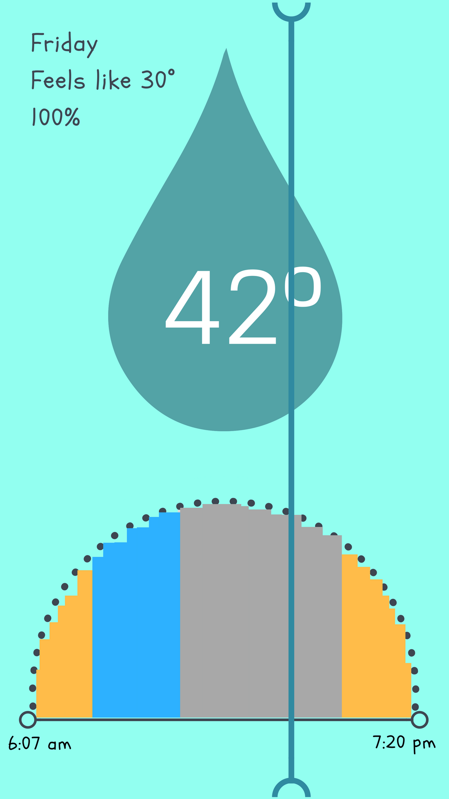
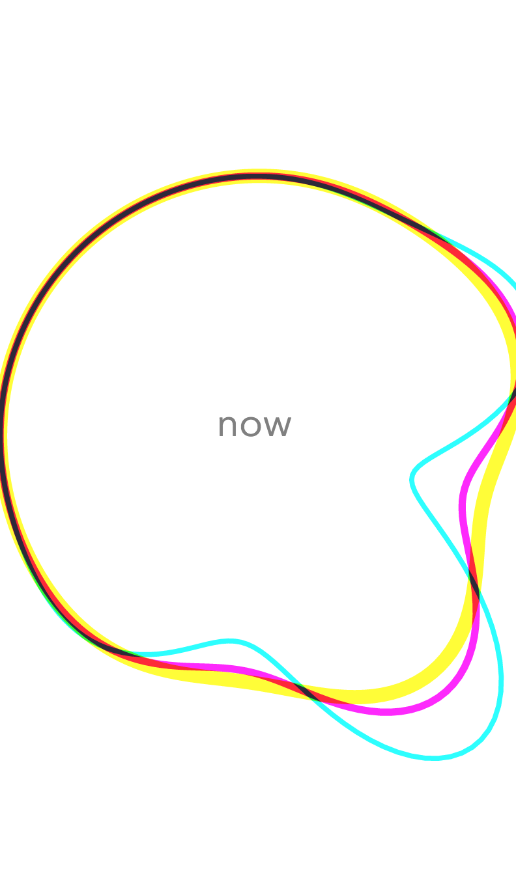

Initial Sketches


Initial Illustration

First Weather App
This is an interactive app. Please explore both pages.
The following are two screenshots to illustrate another example.


Second Weather App
This circle wave describes the current weather Dimension: amplitude and stroke size
The below screenshot illustrates another instance of this circle wave.
